Just running a pretrained TTS model isn't a project, it already speaks well. We wanted to change the voice itself.
Task: map text → audio, then fine-tune the model onto a new voice, a Star Wars B1 battle-droid.
Why a droid? the effect is audible even without metrics: you can hear that fine-tuning worked.
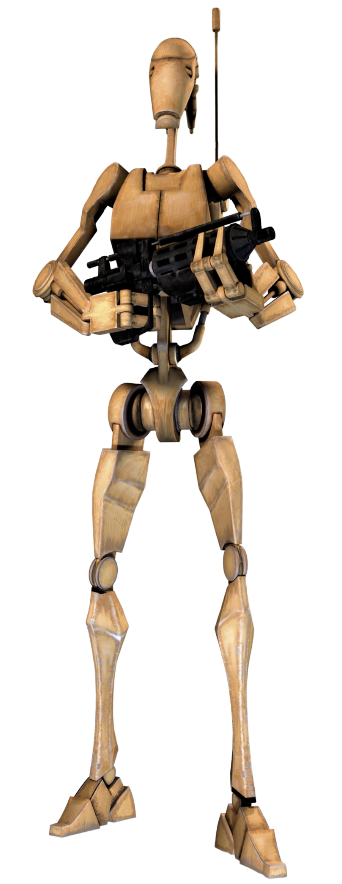
Project architecture: built to move fast
Three of us on one model, so I scaffolded the repo contract-first: each part talks only through small fixed interfaces, never each other's internals.
→ swap the model without touching eval, and all three of us build in parallel.
Offline mocks + smoke test: the whole pipeline wires up in seconds, no GPU. Plus pinned deps · fixed seed · ruff · loguru for reproducibility.
Three ways to change a TTS voice
Approach
What
Verdict
Pre-process
change the input (e.g. phoneme tweaks for an accent)
limited
Post-process
filter the output audio after the model
sounds unnatural
Bake into the model
fine-tune on data in the target voice
the real path ✓
Pre-processing is where I wanted the accent; I tried post-processing for the droid and it sounded unnatural, so I bake the droid voice into the model: it produces the voice natively from text, not as an after-effect.
Where to start: the ideas
Running a pretrained TTS isn't a project. I wanted to change the voice itself, and brainstormed four directions:
B1 droid voice: a timbre change, instantly audible
Heavy accent: phoneme-level manipulation
Emotions: prosody control
Stuttering: rhythm manipulation
I dropped stuttering & emotions (too shallow) and kept the droid as the core, accent as future work.
Our choice: bake in a droid voice
Core: fine-tune on a B1 droid voice; keep the accent as future work.
Post-processing sounded bad, so instead I used RVC to build the training data.
Why this idea fits the project:
One consistent voice across the whole dataset.
A unique effect, audible even without metrics.
Injecting a voice into training, a real way to play with the learning itself.
Building the dataset — RVC
I needed 24h of paired text+audio in the droid voice, can't record that. So I built it with RVC (voice conversion): it repaints the timbre but keeps the pronunciation, so the original transcripts stay valid.
13,100 paired clips, a full droid dataset, for free
scan → the dataset
The trade-off I chose
Because the data is made by RVC, the model learns from RVC's output, not a real droid recording.
↓Quality can't beat the teacher: RVC is the upper bound.
↑ But the model makes the droid voice itself, end-to-end, no second model in production.
Post-processing = run RVC every time. Baking = the voice is built in. A conscious trade: a bit less ceiling, full autonomy. (Ilya measures exactly where that ceiling sits, later.)
Why VITS
End-to-end: text → waveform in one model: no separate vocoder, no intermediate spectrogram to predict then re-synthesize.
Phoneme-level access: needed for the accent idea (future work).
Strong pretrained base to fine-tune from: kakao-enterprise/vits-ljs.
VITS = a conditional VAE with a normalizing-flow prior, a GAN decoder, and a stochastic duration predictor. (Kim, Kong & Son, ICML 2021)
The generator: why it isn't enough
In training the model sees both text and the real audio, and learns to rebuild the waveform:
Trained on reconstruction (L1 on the mel) alone, the audio is weak: blurry, muffled, averaged.
L1 can't capture fine high-frequency detail → we need a discriminator.
At inference there's no audio, the model never transcribes; it only goes text → speech. The real audio is used in training only, to teach the text-prior (the KL term).
Discriminator: built from scratch
Hugging Face ships VITS inference-only: no discriminator. We wrote it, HiFi-GAN style:
Without the discriminator the decoder never learns realistic audio, it's the missing half of the VITS objective.
Lining up text & audio: MAS
A few text tokens, hundreds of audio frames, and no labels for which frame belongs to which token. Monotonic Alignment Search (MAS) finds the best alignment:
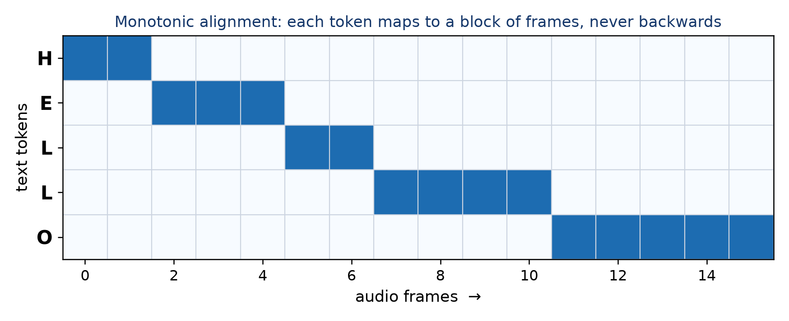
A dynamic-programming search (Viterbi-like) for the highest-likelihood monotonic text→frame map.
Monotonic = speech moves left→right, can't skip or repeat tokens → no "babbling".
It also gives the duration target (frames per token) for the duration loss.
How training works
Per batch: text→prior · real audio→latent z · flow · MAS aligns text↔frames · slice a segment → decoder → waveform → losses. Then alternate two AdamW optimizers:
D step: real vs. detached fake → discriminator loss
I wrapped the alternation in decorators — read the method and it's linear; need the wiring, read the decorator. Logic in the function, complexity in the decorator.
Abstraction
solving the readability problem — or creating it :)
The GAN loop is messy: two optimizers, detach, zero-grad, backward, clip, AMP scaler, accumulation, checkpointing, all wrapped around two tiny core steps.
I moved all that wiring into decorators, leaving only the real D-step / G-step logic in the methods.
Read the method → the algorithm is linear and clear. Need the plumbing → read the decorator.
Normal in ML: torch.nn.Module hides backward/autograd the same way. The complexity doesn't vanish, it goes where it belongs.
The 8 GB card is the whole reason for batch 1 + accumulation and fp16, full numbers & config coming up.
Problems & fixes: nothing converged at first
Early runs: recon stuck ~0.45, duration loss 100–475, the voice came out far too fast. Three bugs:
#
Problem
Fix
1
duration loss ~100× too large (averaged wrong)
.sum()/mask.sum() → dur 300→1.7
2
grad-clip too tight → killed the generator update
raise the clip → recon broke its plateau
3
fresh discriminator corrupted the pretrained decoder
warm up D 1500 steps + lower LR
→ real training: recon 0.85 → 0.40, correct speech rhythm.
Training setup & cost
epoch
duration
1
1.89 h
2
1.89 h
3
1.96 h
4
2.02 h
5
1.93 h
total
≈ 9.68 GPU-h
local RTX 5060 (8 GB)
parameter
value
learning_rate
1e-4 vs 2e-4 from scratch
batch_size
1 + grad accumulation
segment_size
8192 decoder crop
grad_clip_norm
10
disc_warmup
1500 steps
use_amp
True fp16
loss weights
mel 45 · kl 1 · adv 1 · fm 1
Plus ~3× more in failed runs & debugging, and the RVC baking of the whole 13,100-clip dataset on top. The 9.68 h is only the final clean pass, the real work was everything before it.
Reconstruction loss (L1 mel)
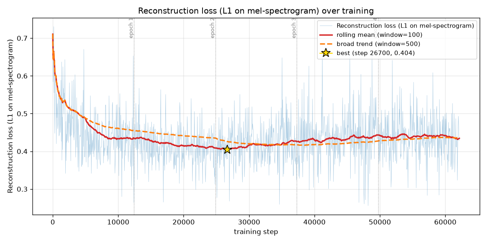
Sharp drop, then plateau ~0.42, best at step 26,700 (0.404): the core voice is learned early; after that the GAN slowly drifts up. That's why I don't take the last checkpoint.
Duration loss
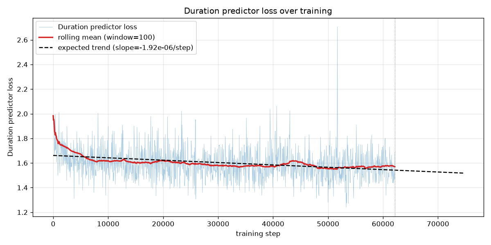
After the normalization fix, duration sits at a healthy ~1.6 (best 1.55, was 100–475): correct, stable speech rhythm.
KL divergence (posterior ‖ prior)
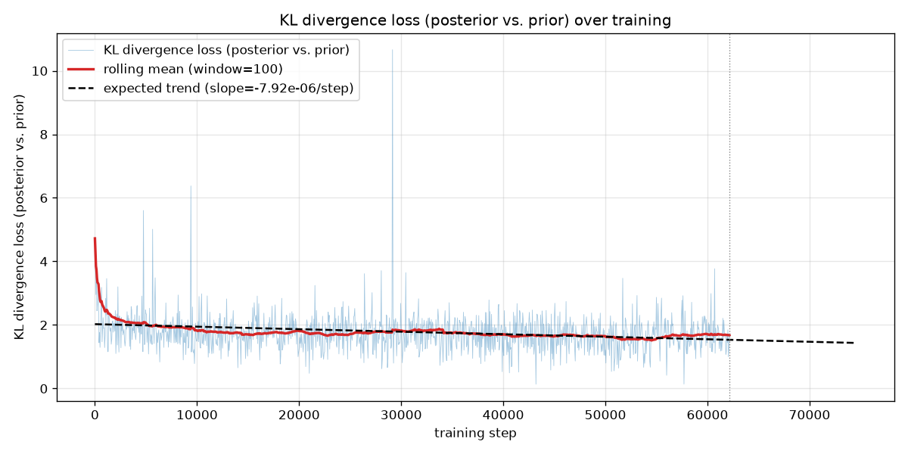
Settles around ~1.7: the text-prior successfully learns to match the audio posterior. Alignment works.
Adversarial loss (generator side)
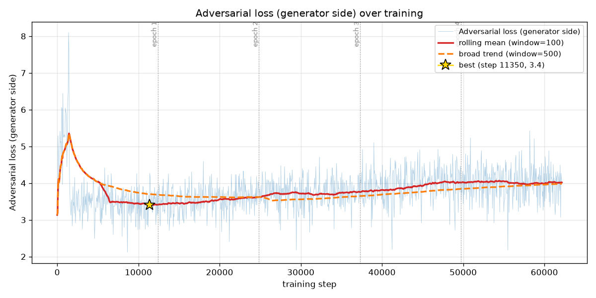
Oscillates around ~4 without collapsing: a healthy GAN equilibrium, generator and discriminator stay balanced.
Discriminator loss
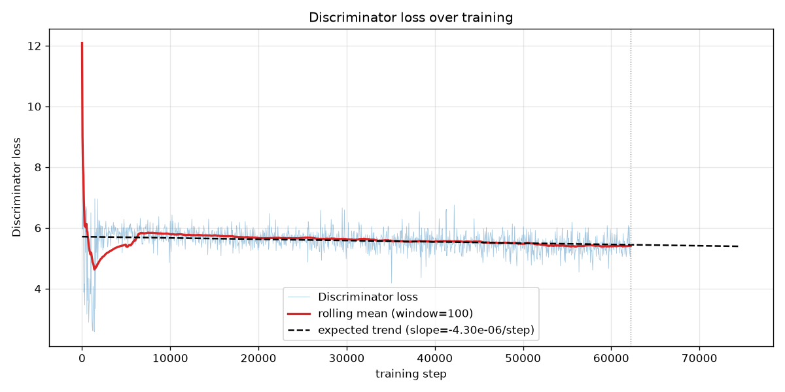
Stable around ~5.5: neither winning nor collapsing. The warm-up kept it from overpowering the pretrained decoder.
Feature-matching loss
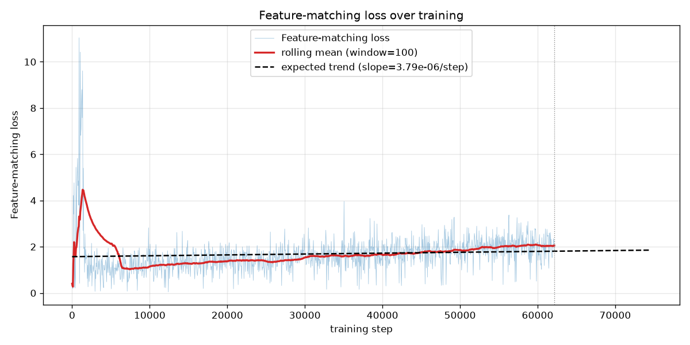
Early spike during warm-up, then settles ~2: matches discriminator features, stabilizes the GAN.
Generator loss (total)
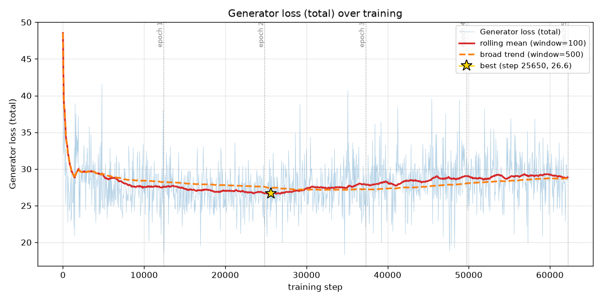
Total G loss ~28, dominated by recon×45. Flat & stable. But a converging loss doesn't prove good speech → that's what evaluation checks next.
Evaluation: what we measure & why
All metrics lower = better:
WER / CER (Whisper): intelligibility, works for any voice, droid included. "Can a listener understand it?"
MCD: spectral closeness to the B1 droid reference, the key one here. "Did it learn the droid timbre?"
F0 RMSE: pitch / prosody distance to the reference.
The ceiling: Whisper on the real B1 recordings = 5.75% WER → no model trained on this data can score below that.
The B1 twist: we score MCD & F0 against the droid reference, not the original female LJSpeech, otherwise we'd just be measuring "how un-droid-like" we are. A deliberate voice change only makes sense measured against the new target. (brief asks WER/CER + one spectral, we report two.)
How we evaluate
Held-out set: the last 5% of the data, never seen in training.
Before / after: one checkpoint swap, same prompts → apples-to-apples.
Contract-first eval module: a manifest (text + reference audio) in → an EvalResult out; WER/CER/MCD/F0 in one pass.
Independent ASR: Whisper is frozen and off-the-shelf, never part of training → no circularity.
655 held-out clips (full 5%) · WER/CER vs text · Whisper · lower = better
Spectral / timbre: MCD to the droid reference 10.5 → 6.0 dB → the voice moved to the droid.
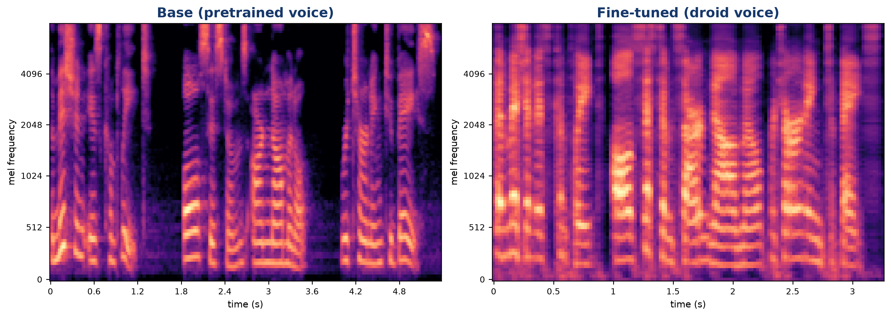
same sentence: the harmonic structure shifts toward the droid timbre
Reading it: MCD 10.5 → 6.0 dB = the timbre moved to the droid (fine-tuning worked). And intelligibility is close to the ceiling: our best model is 14.4% WER vs the 5.75% of the real B1 recordings, the model can't beat its teacher, but it lands near it.
Demo
Same sentence, before and after: "The mission is complete. All systems are nominal. Returning to base."
1 · Base VITS (the pretrained voice, before)
2 · Fine-tuned → droid (same line, now the droid voice)
▶ same words, the voice changed.
Failure modes & limitations
Intelligibility cost: WER above the ceiling (~14% vs 5.75%); some short prompts collapse.
Timbre ≠ hard robot: RVC moves a speaker's timbre, not the ring-mod buzz (a separate DSP effect).
GAN artifacts early; over-fitting past the best epoch.
Russian accent: left as future work.
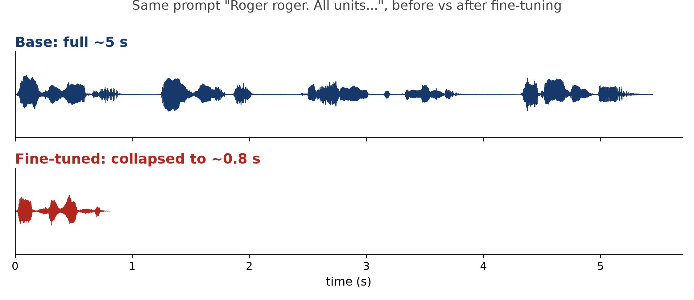
See & hear the collapse:"Roger roger…" → 0.8 s of garble
Takeaways & future work
We built & published a droid dataset (RVC) and fine-tuned VITS onto that voice.
We re-implemented the GAN training from scratch, discriminator, losses, the loop, on an inference-only model.
Result: the timbre moved to the droid (MCD 10.5→6.0); intelligibility ~14% WER, close to the 5.75% ceiling of the data itself, a measured, bounded trade-off.
Future: cut the WER by freezing the text/timing front-end (keeps durations stable), + the Russian accent.